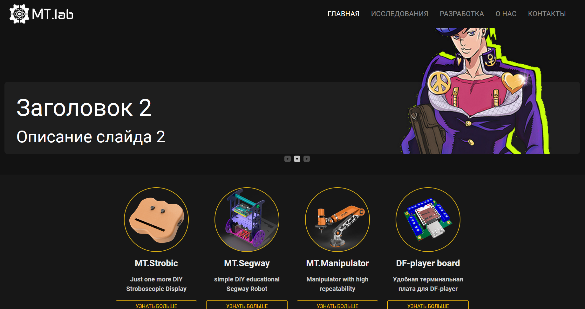

Для лаборатории MT.lab на основе подготовленных стилей сделал шаблоны и автоматическую публикацию сайта с помощью github actions.
Сайт для простоты и легковестности решено было сделать статическим. Так как я больше всего знаком с Python, то был выбран генератор Pelican. Он умеет генерировать из reStructuredText и Markdown файлов страницы по заданным шаблонам.
 Внешний вид сайта
Антон Мацуганов, участник лаборатории, подготовил "front" для сайта - целиком внешний вид и стиль сайта (посмотреть можно тут). Затем я выделил основные компоненты на сайте - карточки на главной, страницы под проекты и так далее - и подготовил шаблоны и иерархию для сайта. Для шаблонов в pelican используется язык Jinja2, похожий на Django template language. Таким образом можно сделать например отображение активной вкладки из меню навигации.
{% for title, link in MENUITEMS %}
{% set full_link = link | format_siteurl %}
{% set curr_link = output_file.replace('index.html', '') | format_siteurl %}
<li class="nav-item {% if curr_link == full_link %} active {% endif %}">
<a href="{{full_link}}" class="nav-link">{{title}}</a>
</li>
{% endfor %}
Здесь фильтр formal_siteurl из плагина htmlsanity используется чтобы не
писать неудобное SITEURL + '/'. Из-за того что многие страницы лежат по пути path/to/page/index.html, чтобы можно было
переходить просто по адресу path/to/page, то из output_file нужно убирать index.html часть. Это конечно костыль,
но с .htaccess пока проблемы и работает оно вот так.
Самое интересное в публикации сайта. Сам сайт хостится с ftp сервера и руками заливать страницы на него не хотелось. И генерировать страницы каждый раз тоже не хотелось для этого (хотя для проверки всё равно придётся, но это мелочь). Благо у github есть actions, которые можно привязать к определённым событиям в репозитории. И этих actions есть на все случаи жизни.
Порядок действий получается следующий: происходит пуш нового контента в репозиторий, автоматически должен сгенерироваться сайт, на сервере необходимо удалить старую версию сайта и залить новую. Для загрузки файлов на сервер можно использовать ssh и для этого как раз есть copy via ssh, также от того же автора есть run ssh command. Последнее поможет в удалении файлов. Для связи по ssh в секретах репозитория надо прописать данные для подключения к серверу.
Как оказалось генерацию сайта тоже можно делать на гитхабе и не держать ни единого файла в репозитории, кроме исходников. Поскольку в процессе исполнения github у себя поднимает виртуальную машину, то можно спокойно к ней подключить python, установить зависимости и делать что угодно с файлами репозитория, до тех пор пока количество одновременных действий меньше 20. Поэтому все зависимости записываем в requirements.txt и пишем по сути следующий скрипт.
python -m pip install upgrade pip
pip install -r requirements.txt
pelican content -s publishconf.py
ssh user@domen 'rm -rfv *'
scp -r output user@domen:./
ssh user@domen 'mv htaccess .htaccess'
Последняя команда это ещё один костыль. Просто так скрытые файлы передавать не получается, а вот переименовать там "на месте" - запросто. Также не нужно думать об аутентификации, всё это делают сами gihub actions. В итоге получается .yml файл, в котором это всё описано в доступном для гитхаба виде. Например команда для копирования файлов выглядит вот так:
- name: Publish site
uses: garygrossgarten/github-action-scp@v0.6.0
with:
local: output
remote: ./
host: ${{secrets.HOST}}
username: ${{secrets.USER}}
password: ${{secrets.PASSWORD}}
Получается на каждый пуш в репозиторий, когда кто-либо из участников напишет новую статью, гитхаб сам всё соберёт и отправит. Удобно и просто.